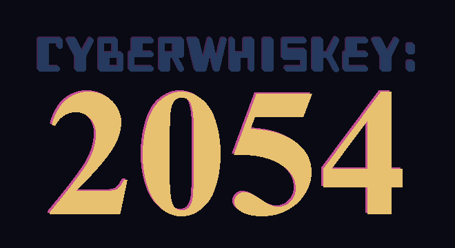
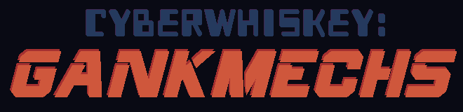

Hi, I'm CrunchRock.
I love making games and telling cyberpunk stories with Unity and Phaser3.


CyberWhiskey: Guy's Room is an adventure game made with C# and Unity.
Click here to play free on Steam now!
Current Projects

CyberWhiskey: 2054 is a an adventure-rpg set in NeoTampa, played from a first person perspective with voxel graphics. Play as Guy, a well-intentioned IT worker who makes digital drugs on the side with his hacked service AI and a ragtag crew of friends. Survive corporate servitude, uncover global conspiracies and maybe get a girlfriend if you play your cards right.
CyberWhiskey: 2054 will feature over 25 hours of gameplay with dozens of unique and detailed locations to explore. Players will solve unique puzzles integrated into a sprawling CyberPunk opera, defeating enemies using a wide variety of non-violent mechanics.
Central to CyberWhiskey is the theme of an individual human trying to find their place in a vast future controlled by code and AI that humans can barely read or program anymore. Surrounding Guy are beautiful and engaging characters, some common and most exceptional. His relationships with humans and artificial intelligences expose him to a variety of experiences: love, fear, curiosity, anger, envy, compassion and more.

CyberWhiskey: GankMechs is a an asymmetric hero shooter, played from a first person perspective with voxel graphics. Play as either a Ganker or a Valiant pilot in an intense battle to control map points and escort NPCs through live PVP combat. Currently under development, GankMechs will be available for Early Access play on Steam both within the CyberWhiskey: 2054 app as well as a standalone free-to-play game.
GankMechs is also the most popular VR game played in the CyberWhiskey: 2054 universe. At critical plot points in 2054, you can expect to play rounds of GankMechs, because Guy, Jung and Dolls really like to play GankMechs.